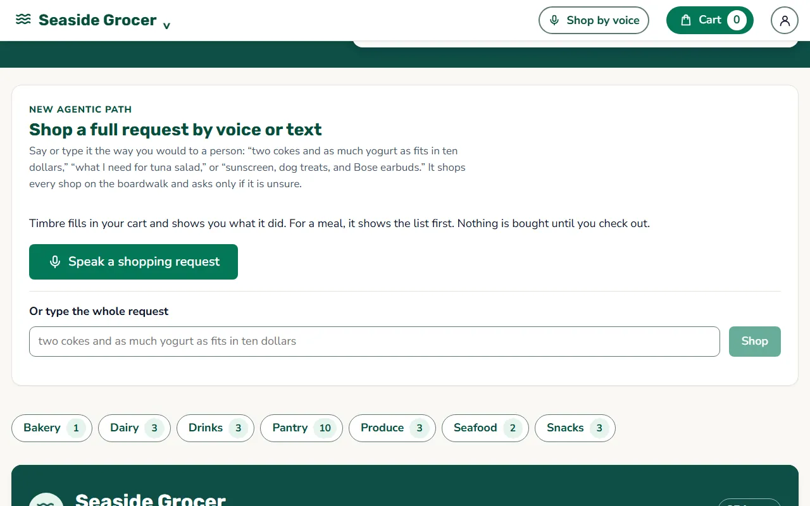
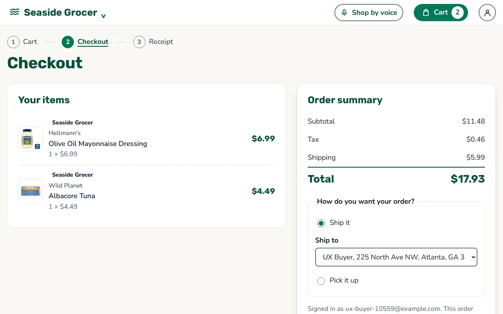
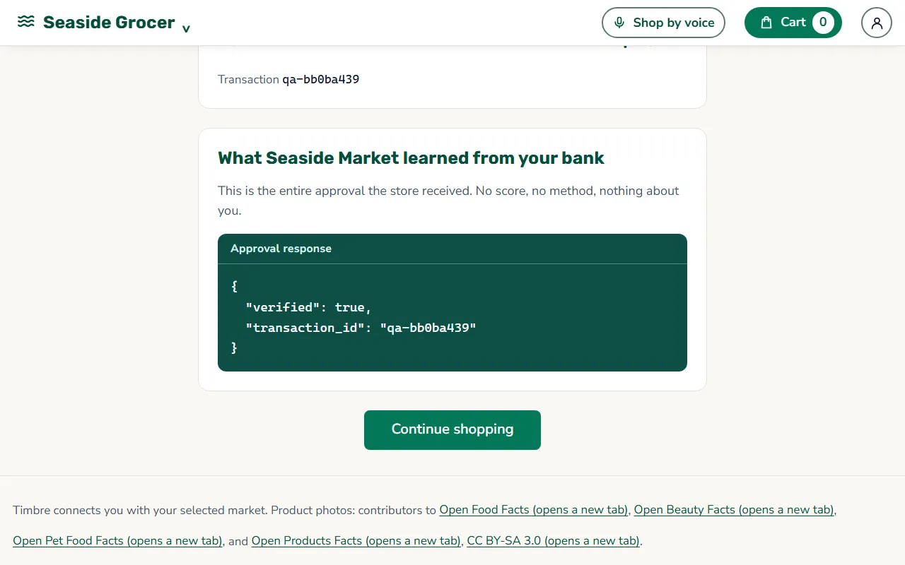
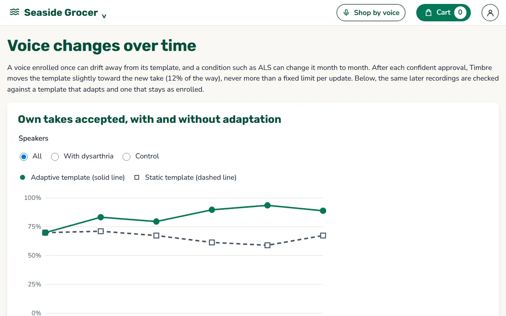
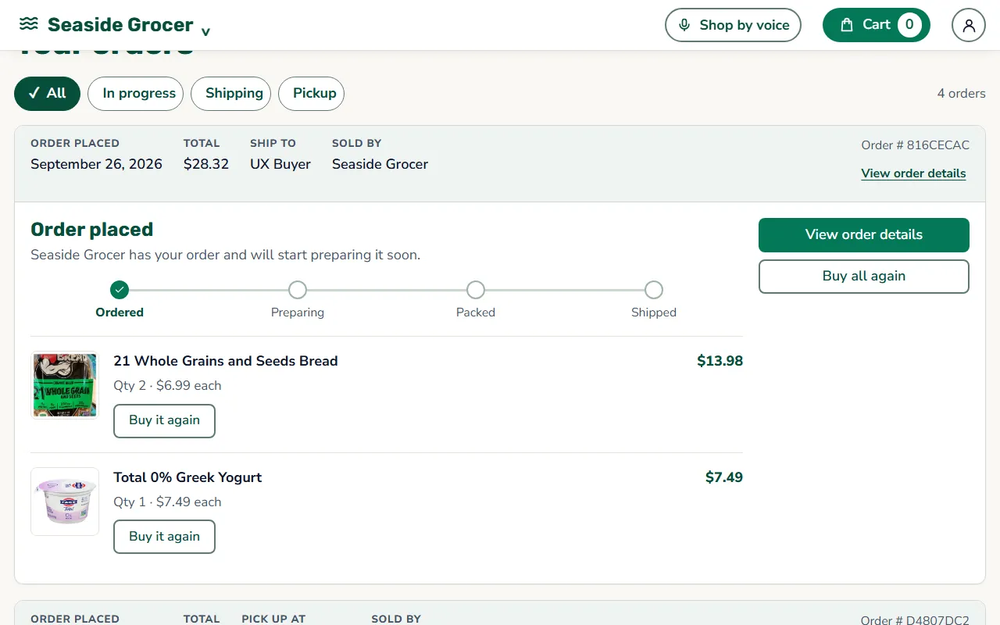
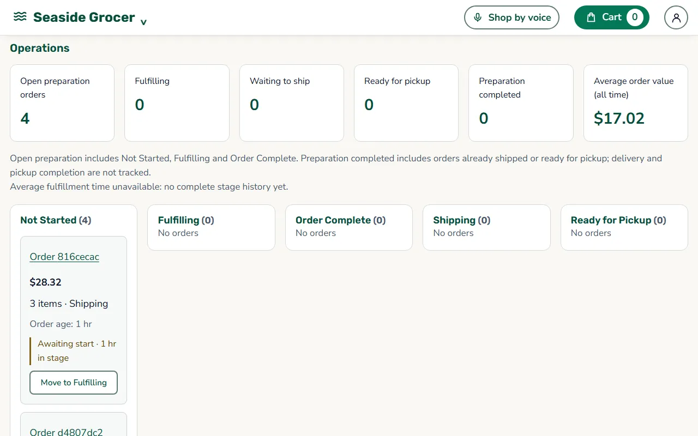

The problem
Identity lives in the acoustics of a voice. Intelligibility lives in articulation. Today's systems conflate the two and reject people for failing a test that was never necessary.
2.7 to 4 million
US adults live with dysarthria, a motor speech disorder after a stroke, or with Parkinson's disease, cerebral palsy, multiple sclerosis, or ALS. They understand language and think clearly; their articulation is impaired.
The workaround is handing over your card
Phone menus, voice enrollment, and "say your card number" all require clear speech. When they fail, the fallback is asking a family member to call the bank, which means sharing card numbers and account access. That is the harm Timbre addresses.
How it works
Timbre is issuer infrastructure, like 3-D Secure, not a consumer app. Your bank turns it on and every store inherits it. The store in the demo is a test harness proving that integration takes two server-to-server calls and that the store learns nothing about you.
Enroll at your bank
Choose three sounds you can repeat: a word, a hum, a held vowel. Record each five times, in alternating rounds, so the bank learns your natural variation, not one moment.
Approve with your voice
At checkout the bank asks for two of your sounds in random order and compares them against a threshold set from your own variability. Replayed recordings are rejected. Nothing in this path transcribes audio.
The store learns one thing
The merchant receives exactly
{verified, transaction_id}: no score, no method, no attempt count. After two missed tries a passkey completes the purchase, so nobody hits a dead end.
A tour of the demo
Screenshots from the working build. The demo runs locally; this page is a static showcase.












Results, with their caveats
Preliminary, small corpora, correlated trials. Not a benchmark, not a population claim, not a clinical result. All evidence is corpus audio: no disabled speech was imitated.
| What was measured | Result | Caveat |
|---|---|---|
| Live design on an independent dysarthric corpus (repeated-sound protocol) | EER 2.43% dysarthric, 0.29% control | EasyCall, 30 speakers, Italian, 8 kHz upsampled, pre-registered; corpus impostors |
| Same design against a same-word attacker | EER 2.84% dysarthric | Exploratory, not pre-registered; no synthetic voices |
| Text-independent check on TORGO | EER 8.8% dysarthric, 6.7% control | 11 evaluation speakers; different words per template |
| Transcription check versus Timbre on identical TORGO takes (dysarthric) | Right person 45% vs 64%; someone else 64% vs 0.8% | Mixed per speaker; one speaker does worse with Timbre |
| Adaptation over later TORGO sessions | Own takes 84% vs 66% static | Impostors 2.0% vs 1.5%; sessions days apart, not months |
What is new here, and what is not. Dysarthric speaker verification is an existing research area, and text-independent voice biometrics are deployed at major banks. Timbre is a deployment, not a new algorithm: personal thresholds from a speaker's own variability, adaptation for progressive change, an issuer-side privacy split, and a passkey fallback, wired into a payment flow. As far as we could find, none of that had shipped.
We also pre-registered a test that failed, and published the negative result: the encoder fusion we liked was rejected.
How we built it
A store and a bank, each a FastAPI service with its own SQLite database, and a Vite plus React frontend. The speaker model is SpeechBrain ECAPA-TDNN, loaded once and kept warm. Payments go through a provider interface on Stripe test mode, with a Visa CyberSource sandbox provider; the bank stores a token reference and last four digits, never a card number.
- Python
- FastAPI
- SpeechBrain ECAPA-TDNN
- PyTorch
- OpenAI (gpt-4o-transcribe, gpt-4.1-mini)
- faster-whisper
- WebAuthn passkeys
- Stripe test mode
- Visa CyberSource sandbox
- SQLite
- React
- Vite
- Web Audio API
Data: TORGO (Rudzicz et al., 2012); EasyCall (Turrisi et al., 2021, CC BY-NC 2.0, non-commercial evaluation only). Product photos in the demo store: contributors to Open Food Facts, Open Beauty Facts, Open Pet Food Facts, and Open Products Facts (CC BY-SA 3.0).